<div class="w-100 footer">
  <footer
    class="d-flex justify-content-between align-items-center py-4 my-4 container"
  >
    <div class="left-footer">
      
      <p class="mt-4">
        Sawwit is a reddit clone created for the Saperium internship program by
        <a href="https://github.com/kmallari">Kevin Mallari.</a>
      </p>
    </div>
    <div class="right-footer d-flex align-items-start flex-column">
      <a
        href="https://github.com/Saperium-Interns/interns-mini-apps/tree/main/Kevin-Mallari-Sawwit"
        class="d-flex flex-row gap-3 github-link"
      >
        <i class="bi bi-github"></i>Project Repository
      </a>
    </div>
  </footer>
</div>
